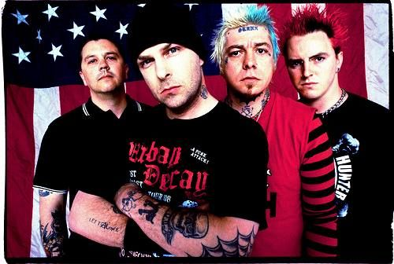
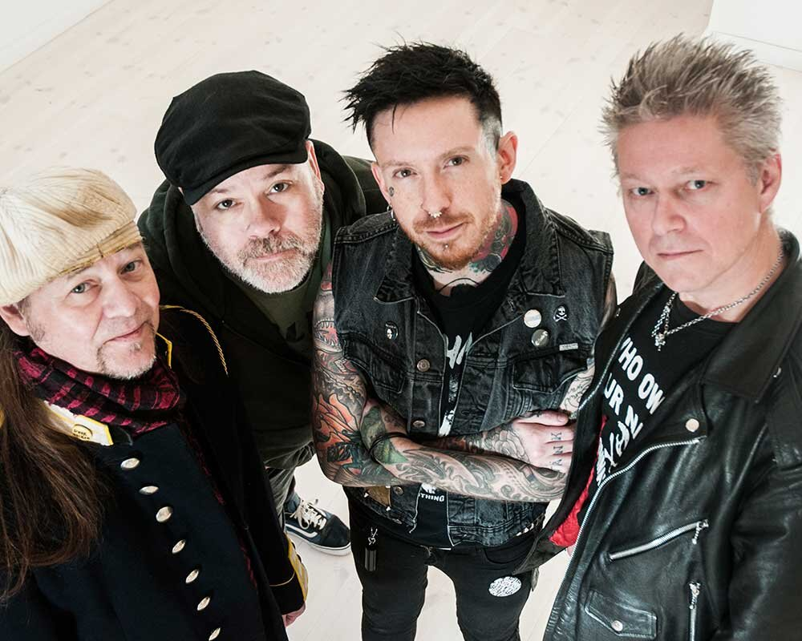
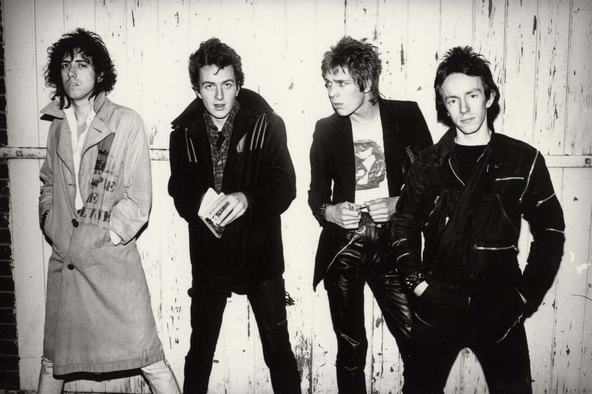

Punkband fr Dummies?
Sex Pistols
Sex Pistols var ett engelskt punkrockband som bildades i London 1975. Ursprungligen bestod bandet av sångaren Johnny Rotten, Glen Matlock på bas, Paul Cook på trummor och Steve Jones på gitarr. Men senare byttes Glen ut med Sid Vicius. Sex Pistols debuterade med singeln "Anarchy in the U.k" som kom ut 1976. Gruppens andra singel "God save the queen" blev totalt förbjuden på radion. Deras debutalbum "Never Mind the Bollocks, Here's the Sex Pistols" räknas idag som ett banbrytande album i rockhistorien. 1978 lämnade Johnny Rotten bandet och Sid Vicius blev arresterad för att ha mördat sin flickvän men släpptse mot borgen. Den 2 februari hittades han död av en översdos. Bandet återförenades 1996 och det var också sista gången det hände
Rancid
Rancid är ett amerikanst punkband som bildades 1991 i Berkely, Kalefornien. Deras musikstil blandar hardcore och punk med reggae, rocksteady och ska. Rancid är mest kända för "Timebomb" och "Ruby Soho". Rancid debuterade med albumet "Rancid", 1993. bandet turnerade med The Offspring 1994 vilket gjorde att deras andra album nådde 97:de plats på billboard 200. Medlemmarna i bandet är Tim Armstrong på sång och gitarr, Lars Fredriksen också sång och gitarr, Matt Freeman på bas och trummorna spelas av Branden Steineckert.
Ebba Grön
Ebba Grön var ett svenskt punkband som bildades 1977 i Rågsved utanför Stockholm. Bandet bildades av Joakim Thåström, Gunnar Ljungstedt och Lennart Eriksson. Namnet Ebba Grön kommer från en poliskod från operationen Leo. Operationen gick ut på att arrestera den tyske terroristen Norbert Kröcher som planerade att kidnappa dåvarande invandrarministern Anna-Greta Leijon. "Ebba Röd" var kod för att det gick ut på att gripa Kröcker, när han var arresterad ropades "Ebba Grön". Förska skivan som gavs ut 1978 och hette "Antirock". Den sista skivan, "Ebba Grön" gavs ut 1982, där en av deras mest kända låt "Die mauer" var med. Den 31 juli 1982 gjorde Ebba Grön sitt sista liveframträde och 1983 splittrades bandet.
Asta Kask
Asta Kask är ett svenskt punkband som bildades 1978 i Töreboda. Bandet gick först under namnet X-tas. Runt 1980 bytte bandet namn till Asta Kask. Bandet spelade in sin första LP "För kung och fosterland" 1981. Bandet bestämde sig sendan för att spela in en sista LP och göra en turné. Sedan gick dem ihop igen för två spelningar 1989, en turné 2003. Nu håller de fortfarnade på än idag. En av deras mest populäraste låt är "Vill inte va med" med 3.5 miljoner lyssningar på spotify.
Ramones
Ramones var ett punkrockband som skapades i Queens, Newyork 1974, som är ett av de tidigaste amerikanska punkrockbanden. De debuterade med albumet "Ramones" 1979. Men pågund av olika tvister inom bandet och deras frusteration av att säljandet av skivor inte gick så bra splittrades de 1996. Deras populäraste låt är "Blitzkrieg Bop".
The Clash
The Clash var ett brittiskt punkband som bildades i Lonodn 1976. De spelade in sitt första album "The Clash" 1977. Deras mest framgångrika album var det tredje "London Calling" som ofta rankats som ett av de bästa rockalbumen genom tiderna. Deras sista album släpptes 1985 och hette "Cut the Crap" och efter det i början av 1986 splittardes bandet. Deras mest lyssnade låt på spotify med ca 561 miljoner lyssningar är "Should I stay or should I go".